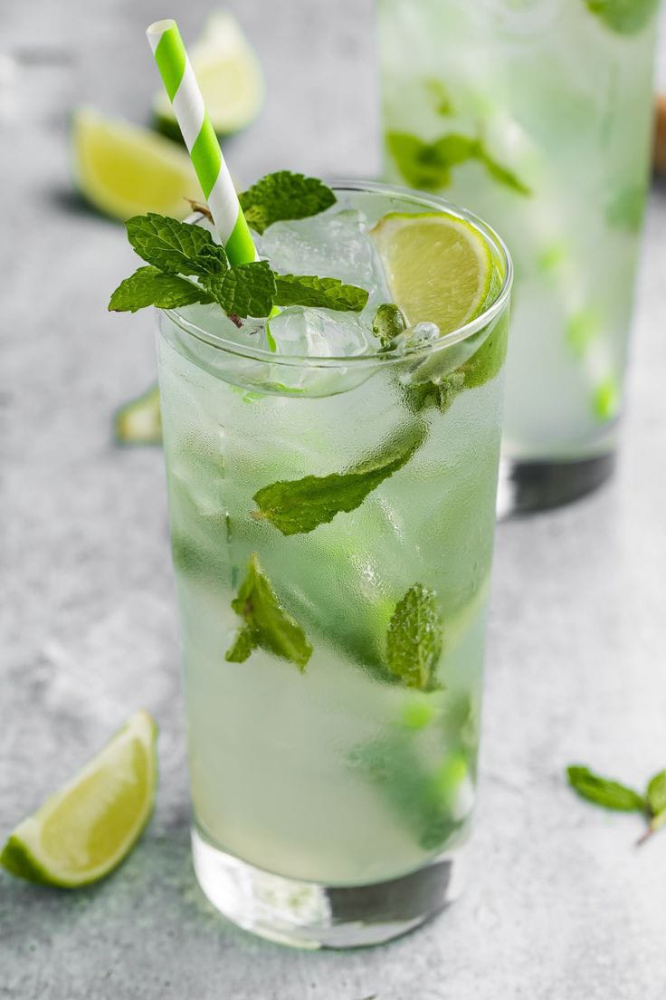
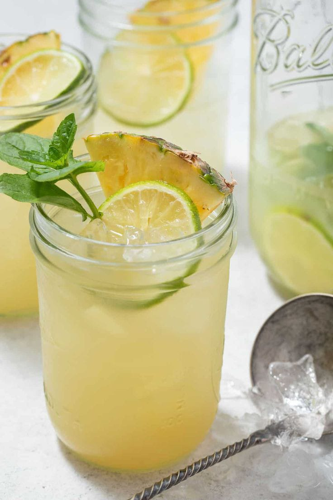
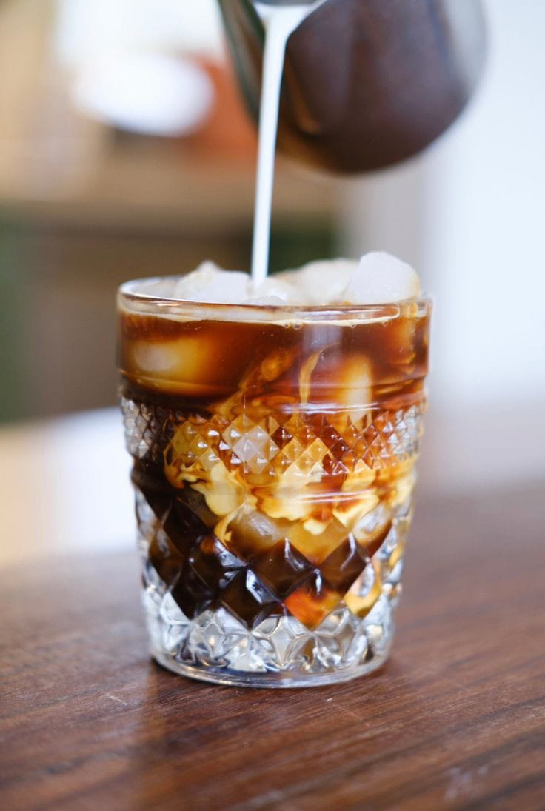
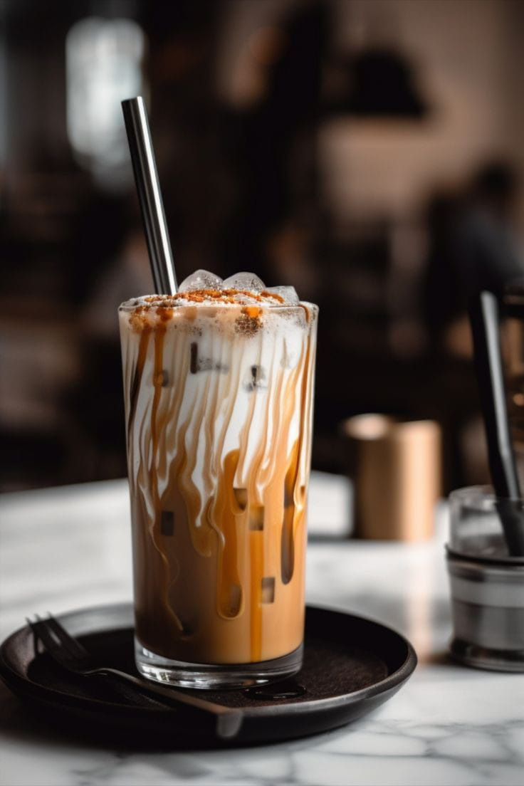
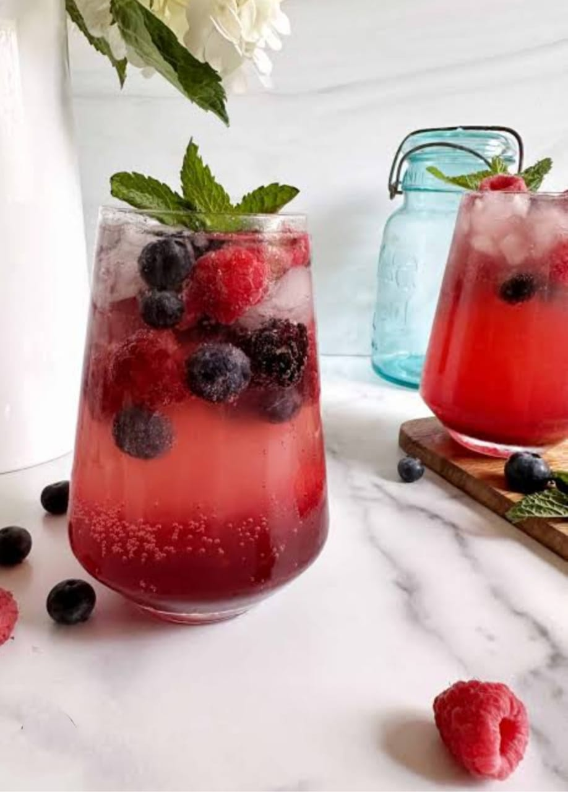

Virgin Mojito

Ingredients:
- 10-12 fresh mint leaves
- 1-2 tsp sugar (adjust to taste)
- 1 lime, cut into wedges
- 1 cup soda water (club soda)
- Crushed ice
- Extra mint sprigs and lime slices for garnish
Recipe:
- In a glass, muddle the fresh mint leaves with sugar and lime wedges using a muddler or the back of a spoon.
- Fill the glass with crushed ice.
- Pour soda water over the ice and mint mixture.
- Stir the drink well to combine the flavors.
- Garnish with a sprig of mint and a lime wedge.
- Serve immediately and enjoy your refreshing virgin mojito!
Additional Tips:
- For extra flavor, you can add a splash of lemon juice or fruit juices like pineapple or cranberry.
- To make it more fun, add a splash of grenadine for a pink twist.
- For a chilled version, keep your glass and ingredients pre-chilled in the fridge.
Pineapple Mint Cooler

Ingredients:
- 1 cup fresh pineapple juice
- 10-12 fresh mint leaves
- 1 tsp honey or agave syrup (optional)
- 1/2 cup cold water or coconut water
- Crushed ice
- Fresh pineapple chunks and mint for garnish
Recipe:
- In a glass or a shaker, muddle the fresh mint leaves with honey/agave syrup.
- Add the fresh pineapple juice and cold water (or coconut water) to the muddled mint and stir well.
- Fill the glass with crushed ice and pour the pineapple-mint mixture over it.
- Garnish with fresh pineapple chunks and a sprig of mint.
- Serve chilled and enjoy this tropical mocktail!
Additional Tips:
- For an added twist, try adding a squeeze of lime or lemon juice.
- Replace honey with stevia or any sweetener of your choice for a sugar-free version.
- Serve in a fancy glass with a colorful straw to make it more festive!
Cold Brew Iced Coffee

Ingredients:
- 1/2 cup coarsely ground coffee beans
- 2 cups cold or room temperature water
- Ice cubes
- 1/2 cup plant-based milk (optional)
- Sweetener to taste (maple syrup, agave syrup, or sugar)
Recipe:
- In a large jar or pitcher, combine the coarsely ground coffee beans and water. Stir gently to combine.
- Cover the jar or pitcher and let it steep in the fridge for about 12-24 hours.
- After steeping, strain the coffee through a fine mesh sieve or a coffee filter into a clean container.
- Fill a glass with ice cubes, pour the cold brew coffee over the ice.
- Add your choice of plant-based milk and sweetener to taste. Stir well.
- Serve and enjoy your refreshing cold brew iced coffee!
Additional Tips:
- Cold brew concentrate can be stored in the fridge for up to a week.
- If you prefer a stronger flavor, add more coffee grounds during the steeping process.
- To make it a nitro coffee, pour it from a height to add frothiness.
Caramel Iced Latte
Ingredients:

- 1 shot espresso (or 1/2 cup strong brewed coffee)
- 1/2 cup cold milk (dairy or plant-based)
- 1-2 tbsp caramel syrup
- Ice cubes
- Whipped cream for topping (optional)
Recipe:
- Brew a shot of espresso or make strong brewed coffee.
- In a glass, add a few ice cubes, then pour the espresso or coffee over the ice.
- Add the cold milk and caramel syrup, and stir until well combined.
- If desired, top with whipped cream and drizzle with extra caramel syrup.
- Serve immediately and enjoy your sweet, creamy iced latte!
Additional Tips:
- Use a milk frother to froth the milk for a café-style latte.
- To reduce sugar, use sugar-free caramel syrup or adjust the amount of syrup according to your taste.
- For an extra indulgence, add a sprinkle of cinnamon or cocoa powder on top of the whipped cream.
Blackberry Mocktail

Ingredients:
- 1/2 cup fresh blackberries (or frozen, thawed)
- 1 tbsp lime juice (freshly squeezed)
- 1 tbsp honey or agave syrup (adjust to taste)
- 1/2 cup soda water (club soda or sparkling water)
- Ice cubes
- Fresh mint leaves for garnish
- Lime wedges for garnish
Recipe:
- In a cocktail shaker or bowl, muddle the fresh blackberries, lime juice, and honey/agave syrup. Use a muddler or the back of a spoon to crush the blackberries and release their juices.
- Add ice cubes to the shaker or bowl.
- Pour the soda water over the ice and blackberry mixture. Stir gently to combine the flavors.
- Strain the mocktail into a glass (optional, if you want to remove seeds).
- Garnish with fresh mint leaves and a lime wedge for a pop of color and freshness.
- Serve immediately and enjoy your refreshing Blackberry Mocktail!
Additional Tips:
- For extra flavor, try adding a splash of orange juice or lemon juice.
- If you want a sweeter drink, increase the amount of honey/agave syrup or use a flavored syrup like raspberry or elderflower.
- For a more intense blackberry flavor, blend the blackberries with a little water before muddling them.